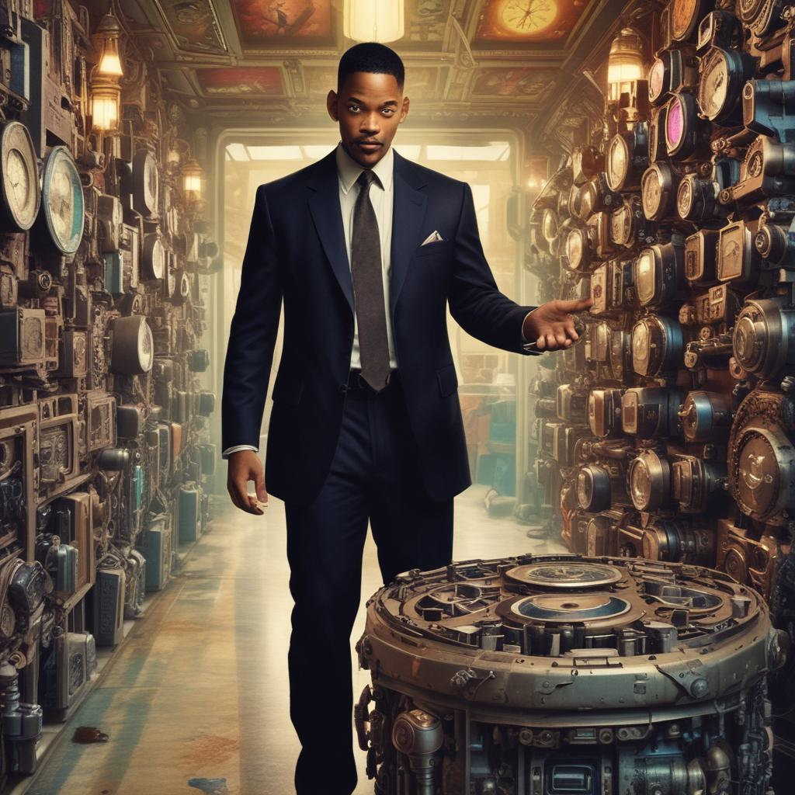

Effectivement, un scientifique nommé Will Smith, peu connu au passage, a inventé une machine qui permet de lire l'avenir grâce aux empreintes digitales.
Ce génie a donc eu la brillante idée de créer cette machine pour "prévoir et stopper", cette citation est si belle.

Tout avait commencé un matin brumeux. Will était dans son laboratoire, concentré sur une expérience qui pourrait changer la façon dont l'humanité percevait le voyage dans le temps. Il avait créé une machine qui, selon lui, pourrait altérer le flux temporel. Mais lorsqu'il avait activé l'appareil, une lumière éblouissante avait enveloppé toute la pièce, et en un instant, son laboratoire avait disparu, comme aspiré par un trou noir. D'abord confus, puis terrifié, Will avait couru hors du bâtiment. Le monde autour de lui semblait inchangé, mais quelque chose n'allait pas. Les rues étaient les mêmes, les gens aussi, mais il y avait comme un vide, une absence, comme si une partie du monde avait été effacée. Paniqué, il se rendit à l'adresse de son laboratoire, mais il ne trouva que des ruines.
Son premier réflexe fut de chercher des indices. Après des heures de fouilles infructueuses, il finit par découvrir un étrange carnet. Ce n'était pas n'importe quel carnet : il avait l'air d'avoir été écrit dans un langage ancien, presque crypté. En l'ouvrant, Will aperçut une note manuscrite, griffonnée par une main qu'il reconnaissait bien. C'était lui, son écriture. Mais les mots étaient incomplets, comme si une partie de sa mémoire avait disparu avec le laboratoire. "Tu n'es pas dans ton temps. Trouve la clé du Temps, et tout reviendra. Mais attention, chaque minute que tu perds te mène un peu plus loin dans le passé."
Cela ne faisait aucun sens, mais Will était un scientifique pragmatique. Il décida alors d'entreprendre une quête pour retrouver son laboratoire et, espérait-il, la clé pour réparer les erreurs qu'il avait peut-être commises en jouant avec le temps. Il se rendit dans une vieille bibliothèque, où il espérait trouver des réponses. Parmi les vieux grimoires, il découvrit un ouvrage antique qui détaillait des théories anciennes sur les voyages temporels. Un chapitre attira son attention : "Le Labyrinthe du Temps." Il y était écrit que toute manipulation du temps créait des anomalies spatio-temporelles, et que le seul moyen de les réparer était de naviguer dans le labyrinthe – un espace où le temps était déformé.
Will se lança alors dans un périple à travers différentes époques, cherchant des indices, rencontrant des versions plus jeunes ou plus vieilles de lui-même. Chaque rencontre l'aidait à reconstituer les pièces du puzzle, mais à chaque fois, il sentait la pression du temps se resserrer autour de lui. Il était en train de perdre des souvenirs, et plus il attendait, plus les mondes qu'il traversait devenaient flous et instables. Enfin, après ce qui sembla être une éternité, Will atteignit une version future de son laboratoire, cachée au cœur d’une forêt dense. Là, il fit une découverte choquante : la machine qu'il avait créée avait non seulement ouvert des portails temporels, mais elle avait aussi généré des copies de lui-même, des versions qu’il devait affronter pour récupérer l'intégralité de ses souvenirs et de son savoir. Mais à travers toutes ces épreuves, une question le hantait : si le temps pouvait être manipulé, pouvait-il également effacer ce qu’il avait appris ? Est-ce qu'en voulant réparer le passé, il risquait de ne jamais pouvoir retrouver son propre avenir ? Au final, Will parvint à réparer les dégâts qu’il avait causés, mais il apprit une leçon précieuse. Le temps, pensa-t-il, était bien plus complexe que ce qu’il avait imaginé. Et peut-être que, parfois, il était préférable de laisser les choses suivre leur cours, plutôt que d’essayer de les contrôler.
Si ça vous ennuie...
accueil
Biographie